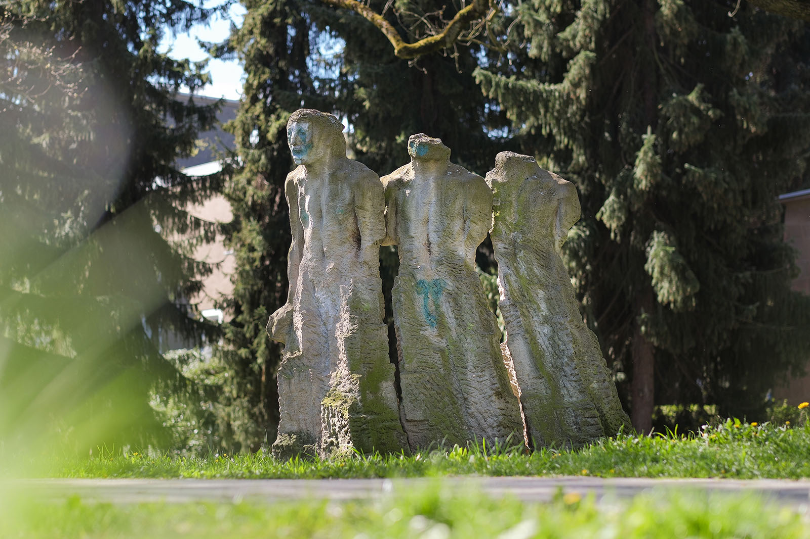
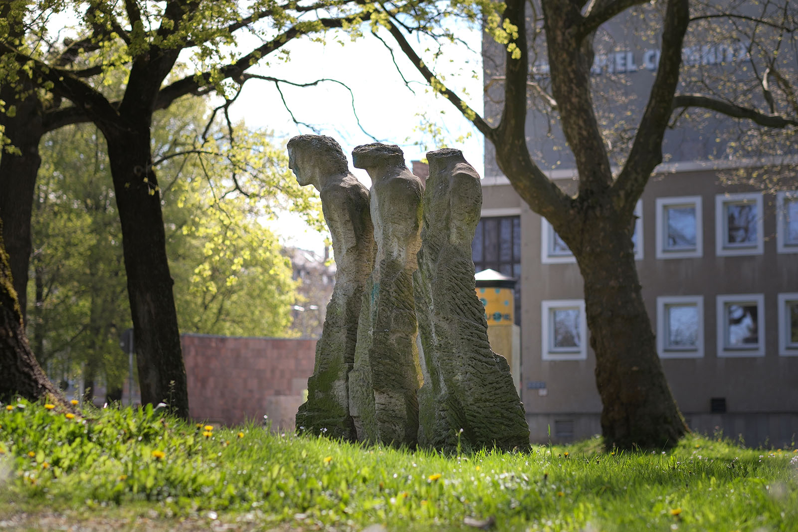
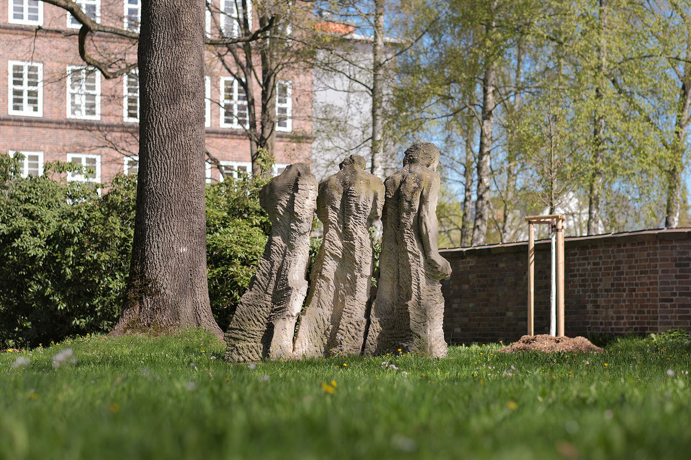
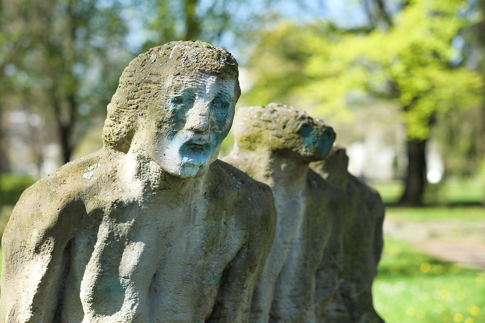
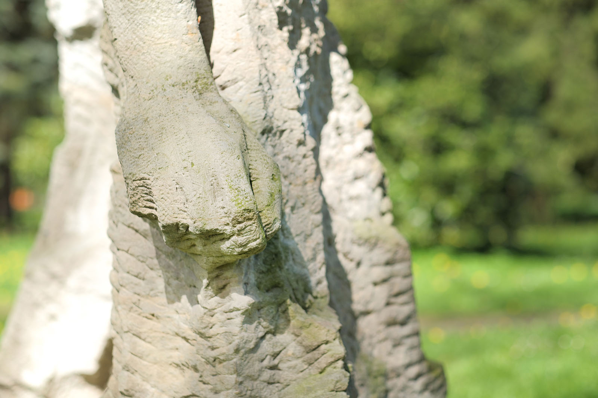
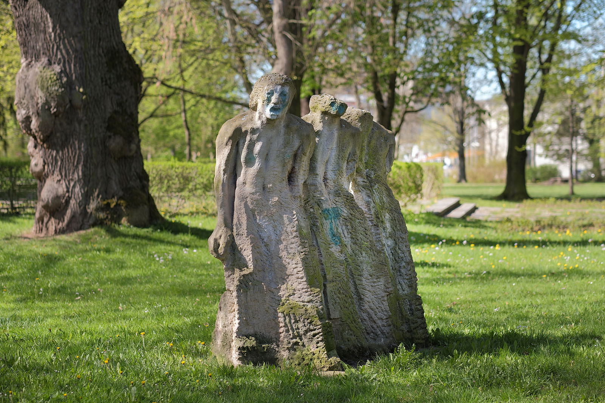

Recherche und Werkbeschreibung: Roman Pilz. Fotografien: Frank Krüger. Text und Bild wechseln sich wie in einem Magazin ab. Ein Klick auf ein Bild öffnet die Großansicht.
Die Figurengruppe "Versuch des unendlichen Menschen", oder kurz "Idee", wie sie später auch genannt wurde, ist eine offensichtlich konzeptionell gedachte Arbeit. Sie entstand 1979 als Auftragsarbeit für den mit plastischen Kunstwerken gestalteten Außenbereich rund um das Schauspielhaus.
Fritz Böhme wurde 1948 in Glauchau geboren und verstarb 2013 in Hohndorf (seit 1994 Teil von Großolbersdorf bei Zschopau). Böhme machte von 1965 bis 1967 eine Lehre als Steinmetz und Steinbildhauer. Seit etwa 1972 arbeitet er auch künstlerisch.
B. in den Förderzirkeln bei Johannes Feige (1931-2021) und Heinz Tetzner (1920-2007). Ab 1975 ist Böhme Mitglied des Verbands Bildender Künstler der DDR, seit 1976 arbeitet er als freischaffender Künstler in seinem Wohnort Hohndorf.
Nebenbei arbeitet er auch als Restaurator im Denkmalschutz. Seine Arbeiten werden seit Mitte der 1970er Jahre regelmäßig ausgestellt. Er beteiligte sich an Bildhauer-Pleinairs in Karl-Marx-Stadt (Chemnitz), Burgas (Bulgarien) und Osetnica (Polen).
1987 wird er gemeinsam mit Heinz Tetzner mit dem Max-Pechstein-Preis der Stadt Zwickau ausgezeichnet und 1996 mit dem Ernst-Rietschel-Preis in Pulsnitz. Böhme betätigt sich künstlerisch mit den Materialien Holz, Stein, Keramik und Polyester. Seine Arbeiten befinden sich in musealen Sammlungen in Chemnitz, Zwickau, Halle und Berlin sowie in öffentlichem und privatem Besitz in Deutschland und im benachbarten Ausland.
An seinem Atelier in Hohndorf errichtet er ab 2007 auch einen Skulpturengarten.
Die über 2 Meter hohe Bildhauerarbeit steht im Kontext der anderen das Theater schmückenden Werke für das tragische Moment der Kunst – den Kampf mit der Existenz, der Natur und äußeren Kräften. "Unendlichkeit" wird in dieser aufsteigenden Reihung unfertiger Menschengestalten auf den ersten Blick als "Unvollendet-Sein" gefasst.
Die drei Figuren werden von Böhme nur ansatzweise aus dem Sandstein befreit. Von rechts nach links wächst vor allem der Kopf, der Ort unseres Denkens und Bewusstseins, Stück für Stück. Unten an der Basis bleiben alle drei Körper in grob behauenen Steinblöcken gebunden. Obwohl vereinzelt, stehen die Figuren dicht zusammen. Man könnte sie auch als drei nebeneinander gestellte Stufen ein und desselben Wachstumsprozesses deuten.

Die kleinste Figur ganz rechts ist nur im Bereich der kräftigen Schulter ausgearbeitet und geglättet. Ansonsten furchen Rillen und lange Kanten die wie ein kristallines Gefüge nach oben strebende Gestalt. Voller Spannung biegt sie sich nach vorne, drängt heran an die Mittelfigur, die am statischsten von den dreien wirkt. Dieser Mittelmann ist schon mehr wie ein Torso gearbeitet. Ein Kinn und Armansätze sind ausgebildet, aber nicht viel mehr.
Erst die Figur ganz links, die sich aus der jeweils dahinterstehenden zu ergeben scheint – hat nun ein Gesicht, wird also zur mündigen Person, die sich ihrer Umwelt mitteilen kann. Der Mund ist weit geöffnet zum Ruf oder Schrei. Der Körper ist zwar gebeugt – die Schwere des Denkens scheint sich bemerkbar zu machen - doch die Faust an der Seite ist geballt und spricht für eine Entschlossenheit, die sich auch unter der Last der Existenz ihren Weg bahnt.

Die Idee zu dieser Arbeit wurde inspiriert durch das Gedicht "Tentativa del hombre infinito" des chilenischen Literatur-Nobelpreisträgers Pablo Neruda aus dem Jahr 1926. Ein Gedicht, das ohne Punkt und Komma expressiv die Schatten und Lichter der Nacht umarmt und sich in sehnsuchtsvoll aufblitzenden Ideenfetzen verliert. Der Dichter nannte das frühe Langgedicht 1950 eines seiner wichtigsten, auch wenn es damals nur wenig beachtet wurde.
Vor dem Hintergrund des surreal desintegrierten Textes von Neruda kann die Gestalt auch "rückwärts" gelesen werden, als Auflösung aller äußeren Form im Griff der Emotionen und Gedanken.

In Chemnitz, im Skulpturengarten der Chemnitzer Volksbank an der Inneren Klosterstraße, ist ein weiteres Werk von Böhme zu sehen ("Pause", 1982). In den Kunstsammlungen Chemnitz befindet sich ein Selbstporträt des Künstlers.

In sich Hineinlauschen
„Die Lauschenden“ von Fritz Böhme nach einer Idee von Walter Howard (1980), Park der Opfer des Faschismus.
